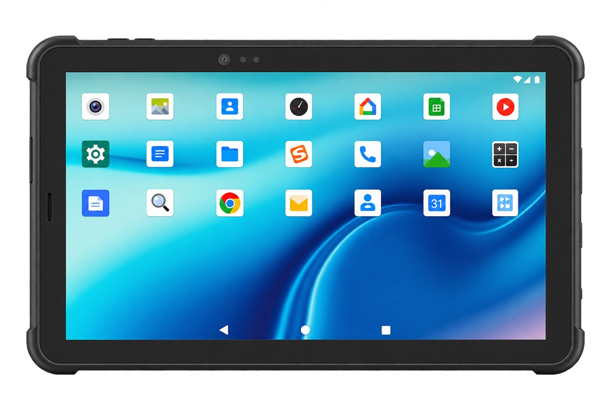

XH-300 10.1-Inch Industrial Tablet
A full-size 1920 × 1200 screen for forms, drawings and dashboards, powered by a 10,000 mAh pack that holds a shift — with room inside for ID reading, face verification or a 2D scan engine.
Non-removable 3.7 V / 10,000 mAh battery, roughly 8 hours of active use.
MTK6765 octa-core up to 2.3 GHz on Android 12, 3 GB + 32 GB standard.
Optional second-generation ID card reader, face recognition with liveness detection or NLS-N1 2D imager.
Dual waterproof speakers, USB 2.0 plus Type-C OTG, TF card to 128 GB.
Specifications
| Design | 248 × 170 × 17.8 mm, approx. 890 g, black housing |
| Display | 10.1-inch, 1920 × 1200, capacitive multi-touch, Corning third-generation tempered glass |
| Cameras | Rear 13 MP auto-focus with LED flash (standard); front 5.0 MP (optional) |
| Audio | Two built-in waterproof speakers 8 Ω / 0.8 W; microphone sensitivity −42 dB, output impedance 2.2 kΩ |
| Battery | Non-removable Li-polymer 3.7 V / 10,000 mAh; approx. 8 hours active use, standby over 300 hours |
| OS | Android 12.0 |
| CPU | MTK6765 octa-core, up to 2.3 GHz |
| Memory | 3 GB + 32 GB standard; 4 GB + 64 GB or 6 GB + 128 GB optional; TF card up to 128 GB |
| SIM and storage | SIM slot covering China Mobile, Telecom and Unicom networks; TF card slot up to 128 GB |
| Ports and keys | USB 2.0 × 1, Type-C OTG × 1; power key × 1, volume keys × 2, assignable function keys × 3 |
| Wireless | Dual-band WiFi 802.11 a/b/g/n/ac (2.4 G + 5 G); Bluetooth 5.0 BLE |
| Cellular | LTE B1/B3/B5/B7/B8/B20/B38/B39/B40/B41; WCDMA B1/B2/B5/B8; GSM 2/3/5/8 |
| Positioning | Beidou, GPS and GLONASS |
| Barcode scanning (optional) | NLS-N1 2D imager; 5 mil optical resolution, 5 scans/second; PDF417, MicroPDF417, Data Matrix (incl. inverse), MaxiCode, QR Code, Micro QR (incl. inverse), Aztec (incl. inverse), Han Xin (incl. inverse) |
| Identity modules (optional) | Second-generation resident ID card reader using a Ministry of Public Security decoder module, hardware decoding, works offline; face recognition with liveness detection, 0.2–1.5 m working distance, ≥99.72% verification accuracy, ≤1 s recognition |
| Environment | Six-face rolling test to 1,000 cycles; storage −20 °C to +60 °C; humidity 95 % non-condensing |
Where the XH-300 fits
Field inspection and maintenance: the 1920 × 1200 panel shows a full checklist or schematic without scrolling, and the 10,000 mAh pack covers a working day away from a socket.
Identity counters and registration desks: optional ID card reading plus face verification turns the tablet into a single-counter enrolment station, and both modules run offline so rural sites are not blocked by network quality.
Warehouse and production supervision: add the NLS-N1 2D imager for bin labels and part numbers, and three assignable keys give operators one-handed shortcuts for the actions they repeat most.
Digital signage and kiosks: with dual speakers, Type-C OTG and a TF slot up to 128 GB, it also works as a fixed information or self-service terminal.
OEM / ODM, factory direct
Identity modules, scan engine, memory tier, LTE bands, boot logo, pre-installed applications and packaging are all decided before the line starts. Tell us the target country and we will match the radio bands and charger plug to that market.